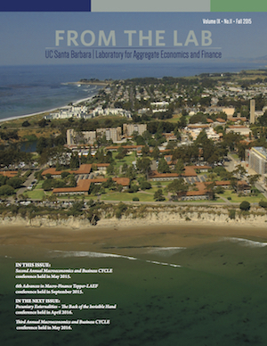
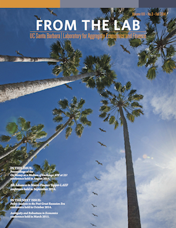
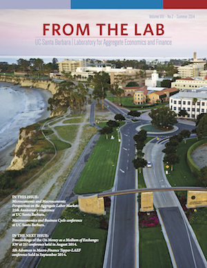
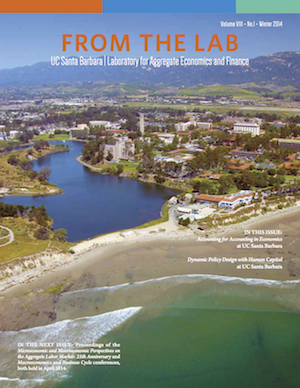
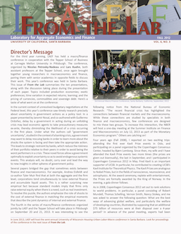
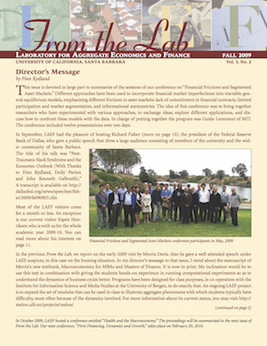
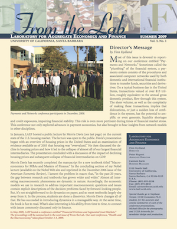
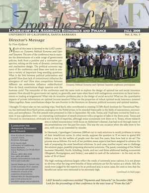
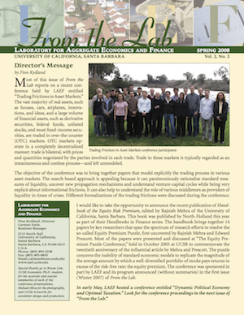
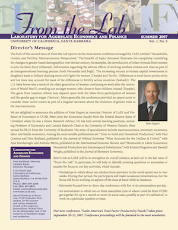

Newsletters
- The Macro and Micro Economics of Climate Change
- 2017 Workshop of the Australasian Macroeconomics Society and LAEF
- Bubbles
- Fourth Annual Macroeconomics and Business CYCLE
- OTC Markets and Securities Workshop
- What We Know About Information in Financial Markets Conference
- The 3rd Workshop of the Australasian Macroeconomics Society
- 7th Advances in Maro-Finance Tepper-LAEF
- Pecuniary Externalities - The Back of the Invisible Hand
- 3rd Annual Macroeconomics and Business CYCLE

- Second Annual Macroeconomics and Business CYCLE
- 6th Advances in Macro-Finance Tepper-LAEF
- Policy Analysis in the Post Great Recession Era
- Ambiguity and Robustness in Economics

- On Money as a Medium of Exchange: KW at 25!
- 5th Advances in Macro-Finance Tepper-LAEF Conference

- Microeconomic and Macroeconomic Perspectives on the Aggregate Labor Market: 25th Anniversary Conference
- Macroeconomics and Business Cycle Conference

- Accounting for Accounting in Economics
- Dynamic Policy Design with Human Capital
- Housing-Urban-Labor-Macro Conference

- Third Annual Macro-Finance Tepper-LAEF Conference
- Old and New Ideas about Fiscal Policy
- Health and Mortality
- 2012 Southwest Search and Matching
- Advances in Macro-Finance II
- Organization of Markets
- Putting Information into (or Taking it out of) Macroeconomics
- Economic Growth and Development
- Micro and Macro Labor Models
- Advances in Macro Finance
- International Trade and Economic Development
- Credit, Default and Bankruptcy
- Health and the Macroeconomy
- Firm Financing, Dynamics and Growth

- Financial Frictions and Segmented Asset Markets


- Dynamic Political Economy and Optimal Taxation

- Trading Frictions in Asset Markets
- Latin America’s Total Factor Productivity Puzzle

- Households, Gender and fertility: Macroeconomic Perspectives
- Macroeconomics of Imperfect Risk Sharing
- Housing Workshop